Une tumeur isodense ou < 2 cm peut n'être révélée que par les signes indirects.
Échographie
Directs
Masse hypoéchogène, mal limitée, céphalique, déformant ou non la glande ; parfois invisible si < 2 cm.
Indirects
Wirsung > 3 mm ± atrophie d'amont ; dilatation des VBIH, VBEH et de la vésicule biliaire.
TDM
Directs
Masse surtout visible au temps pancréatique : hypodense, irrégulière ; tête globuleuse et perte de l'aspect effilé de l'uncus. Dans 10-15 %, masse isodense.
Indirects
Interruption brutale du Wirsung > 3 mm ; VBP > 7 mm (> 10 mm si sujet âgé ou cholécystectomisé) ; double canal ; atrophie et pseudokyste d'amont.
IRM
Directs
Hyposignal T1 ; iso- ou discret hypersignal T2 ; hypersignal diffusion avec ADC bas ; rehaussement périphérique progressif aux temps portal et tardif.
Indirects
Dilatation bilio-pancréatique et obstacle analysés en cholangio-wirsungo-IRM.
Exemples en imagerie
Masse céphalique hypoéchogèneMasse hypoéchogène, mal limitée de la tête du pancréas, avec dilatation des voies biliaires d'amont.Masse hypodense au temps pancréatiqueAu temps pancréatique (≈ 45 s), masse hypodense, irrégulière de la tête, mieux visible que sur le parenchyme sain rehaussé.Signe du double canalDilatation conjointe de la VBP (> 7 mm) et du Wirsung (> 3 mm) avec interruption brutale en regard de la tumeur.Diffusion / ADCLésion en hypersignal diffusion avec ADC bas, utile pour les petites tumeurs ou les tumeurs isodenses en TDM.Obstacle bilio-pancréatiqueCholangio-wirsungo-IRM : dilatation bilio-pancréatique d'amont et arrêt net au niveau de l'obstacle céphalique.
VBilan d'extension
1. Extension vasculaire
À rechercher pour le tronc cœliaque (TC), l'AMS, l'AHC, le tronc porte et la VMS : absence de contact ; contact ≤ ou > 180° ; déformation ; sténose ; thrombose / occlusion.
VaisseauRésécableBorderlineNon résécable
AMSPas de contact.Contact solide < 180°.Contact > 180°.
Tronc cœliaquePas de contact.Contact tumoral solide ≤ 180°, OU contact tumoral solide > 180° sans impliquer l'aorte, court et reconstructible (uniquement pour les tumeurs du corps / queue).Contact > 180° non reconstructible ou contact avec l'aorte.
AHCPas de contact.Contact < 180° ou > 180° sans extension au TC ni à la bifurcation hépatique ; segment reconstructible.Extension au TC ou à la bifurcation hépatique.
VP / VMSPas de contact ou contact < 180° sans irrégularité.Contact > 180° ; ou ≤ 180° avec irrégularité ; ou thrombose courte avec segments sains proximal et distal permettant une reconstruction.Occlusion / atteinte sans reconstruction possible ; atteinte des veines jéjunales proximales.
Critère pronostique et d'opérabilité majeur.
Exemples d'extension vasculaire
Contact veineux VMS / tronc porteContact tumoral avec la VMS ou le tronc porte : préciser l'angle (≤ ou > 180°), une déformation ou une thrombose, et si une reconstruction est possible.Engainement de l'AMSContact tumoral solide > 180° autour de l'AMS : critère de non-résécabilité.Infiltration de la lame rétro-porteInfiltration du plan graisseux entre uncus et AMS, derrière la VMS / tronc porte : marge à haut risque R1.
2
Lame rétro-porte
Infiltration du plan cellulo-graisseux situé derrière VMS / tronc porte, entre uncus et AMS ; marge à haut risque R1.
Point de vigilance : son infiltration annonce un risque très élevé de marge R1 et peut faire proposer un statut borderline ou une stratégie néoadjuvante. Elle n'est pas, à elle seule, une impossibilité technique absolue de résection en l'absence d'atteinte artérielle non résécable.
3
Organes de voisinage
Duodénum, estomac, mésocôlon : perte du plan graisseux de séparation ; envahissement pariétal direct.
Contours flous, rupture capsulaire avec graisse infiltrée
Hétérogénéité ou nécrose
Ganglions péri-pancréatiques → n'excluent pas la résection
Ganglions à distance (hile hépatique / mésentérique / rétro-péritonéal) → excluent la résection
Performance de la TDM limitée pour l'analyse ganglionnaire.
5. Extension à distance
Métastases hépatiques, péritonéales, pulmonaires ou ganglionnaires à distance.
IRM supérieure à la TDM pour les métastases hépatiques. Toute métastase = non résécable.
Exemple d'extension à distance
Métastases hépatiquesLésions hépatiques en hypersignal diffusion : l'IRM est supérieure à la TDM pour les détecter. Toute métastase = non résécable.
VIBilan de résécabilité
Résécable
Résection R0 attendue.
Critères : pas de métastase ; pas d'envahissement artériel TC / AMS / AHC ; contact VP / VMS absent ou < 180° sans déformation.
→ Chirurgie d'emblée.
Borderline
Potentiellement résécable mais risque élevé de R1 / R2.
Critères : contact artériel limité ou atteinte veineuse reconstructible.
→ Traitement néoadjuvant puis réévaluation.
Non résécable
Résection R0 impossible.
Critères : engainement artériel majeur / non reconstructible ; atteinte veineuse non reconstructible ; métastases.
→ Traitement palliatif ou néoadjuvant selon contexte.
VIIVariantes vasculaires à signaler
!
Sténose du tronc cœliaque
Par le ligament arqué ou une plaque d'athérome : perfusion hépatique, gastrique et splénique pouvant dépendre de l'AMS via l'AGD ; sa ligature pendant la DPC expose à l'ischémie / nécrose.
À trajet rétro-portal : risque d'envahissement tumoral et de lésion iatrogène lors de la dissection de la lame rétro-porte.
AAnnexe · Cas & images
Cas clinique
Homme de 63 ans, adénocarcinome canalaire du pancréas.
Cas annoté · 4 signes typiques en TDM et IRM · variante du tronc cœliaque · diagnostics différentiels
Cas 1 · Extension vasculaire
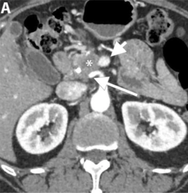
Coupe 1 · TDM axiale, phase pancréatique
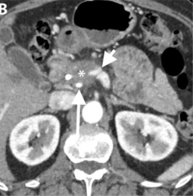
Coupe 2 · TDM axiale, phase pancréatique
1 / 2
✱Astérisque · masse hypodense de la tête du pancréas.
Flèche longue · contact tumoral > 180° avec une artère hépatique droite naissant de l'AMS.
Flèche courte · contact avec la VMS, avec déformation de la lumière veineuse.
Survolez une ligne de la légende pour la repérer sur les images.
Bilan
Contact artériel > 180° et contact veineux avec déformation.
Néoadj.
Traitement néoadjuvant.
Chirurgie
Pancréatectomie totale avec reconstruction vasculaire.
+ 1 an
Apparition de métastases hépatiques.
Signes typiques de l'ADKP
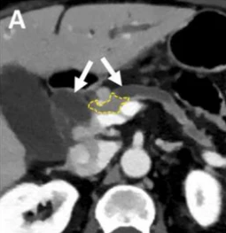
A · Signe du double canalTDM axiale Dilatation conjointe du canal pancréatique principal et des voies biliaires (flèches vertes), en amont d'une tumeur obstructive de la tête (contour pointillé).
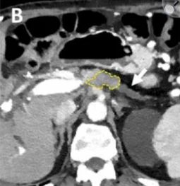
B · Atrophie d'amontTDM axiale Atrophie parenchymateuse de la queue du pancréas (flèche verte), en amont d'une tumeur obstructive du corps (contour pointillé).
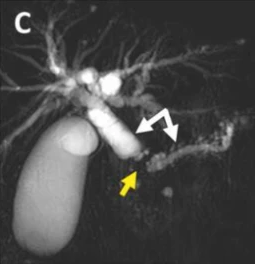
C · Double canal en cholangio-IRMCholangio-IRM Cholangio-wirsungo-IRM : signe du double canal (flèches vertes), en rapport avec une lésion présumée obstructive (flèche orange).
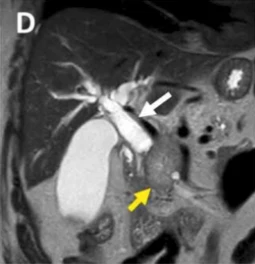
D · Tumeur céphalique obstructiveIRM T2 Séquence pondérée T2 : tumeur obstructive de la tête (flèche orange), responsable d'une obstruction canalaire d'amont (flèche verte).
1 / 4
Orange · contour pointillé ou flèche : la tumeur obstructive.
Variante vasculaire · Sténose athéromateuse du tronc cœliaque
Perfusion hépatique, gastrique et splénique pouvant dépendre de l'AMS via l'AGD : sa ligature pendant la DPC expose à l'ischémie / nécrose. À signaler au chirurgien.
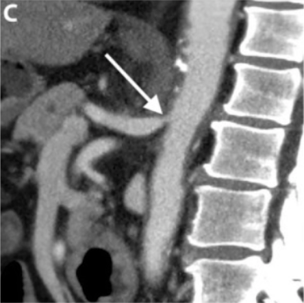
A · Plaque à l'origine du tronc cœliaqueTDM sagittale Plaque d'athérome à l'origine du tronc cœliaque (flèche rouge), responsable d'une sténose ostiale.
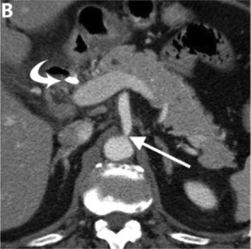
B · Retentissement en coupe axialeTDM axiale Origine sténosée du tronc cœliaque (flèche rouge). Flèche violette courbe : voie de suppléance par l'AMS via l'AGD (arcades pancréatico-duodénales).
1 / 2
Rouge · plaque d'athérome / sténose de l'origine du tronc cœliaque.
Violet (courbe) · voie de suppléance (AMS → AGD).
Diagnostics différentiels
DDx 1
Homme de 72 ans, métastases pancréatiques d'un carcinome papillaire de la thyroïde.
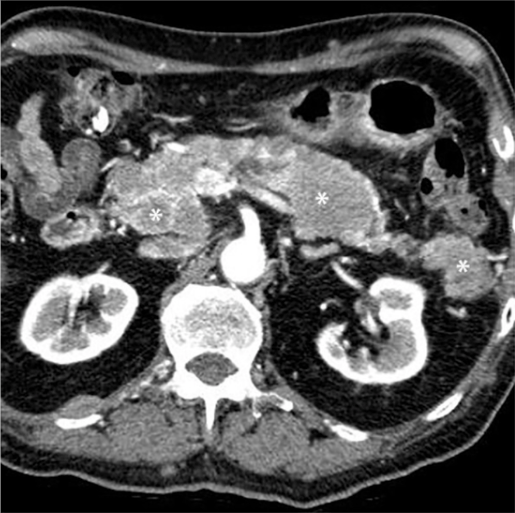
Métastases pancréatiquesTDM axiale · phase pancréatique Multiples masses rehaussées (astérisques) intéressant l'ensemble du pancréas (tête, corps et queue).
1 / 1
Ici : métastases
Lésions multiples, dispersées dans tout le pancréas.
Homme de 53 ans, tumeur neuroendocrine pancréatique de la tête.
Anatomopathologie : tumeur endocrine du pancréas
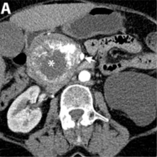
A · Temps artérielTDM axiale · artériel Masse céphalique bien limitée (astérisque), à rehaussement périphérique hypervasculaire avec zone centrale kystique.
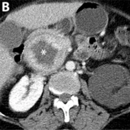
B · Temps portalTDM axiale · portal Persistance du rehaussement périphérique autour de la zone centrale kystique (astérisque).
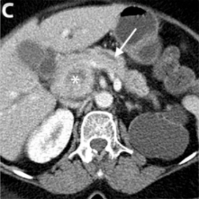
C · Temps portal · canal pancréatiqueTDM axiale · portal Discrète dilatation du canal pancréatique principal (flèche verte), par compression extrinsèque et non par une origine canalaire de la tumeur.
1 / 3
✱Astérisque orange · la tumeur neuroendocrine.
Flèche verte · dilatation du canal pancréatique principal.
Ici : TNE pancréatique
Masse bien limitée.
Hypervasculaire au temps artériel, rehaussement périphérique.
Zone centrale kystique.
Canal peu dilaté, par compression extrinsèque.
ADK canalaire typique
Masse mal limitée, infiltrante.
Hypodense au temps pancréatique.
Origine canalaire : interruption brutale du Wirsung, double canal.
DDx 3
Homme de 71 ans, pancréatite auto-immune (PAI) de forme pseudo-tumorale.
Maladie à IgG4 avec fibrose rétropéritonéale
La PAI est un important imitateur de l'ADKP : elle représente environ 2 à 3 % des résections réalisées pour suspicion de cancer du pancréas. Les distinguer est essentiel pour éviter une chirurgie inutile.
1
PAI diffuse
Augmentation diffuse de volume du pancréas, aspect en « saucisse ».
Effacement de la lobulation physiologique.
Liseré périphérique pseudo-capsulaire (« halo »), hypodense en TDM et en hyposignal en IRM.
2
PAI focale / pseudo-tumorale
Moins fréquente. Comme l'ADKP, pseudo-masse irrégulière et mal limitée : diagnostic différentiel difficile.
En faveur d'une PAI focale plutôt qu'un ADKP
Sténose canalaire relativement longue
Canal pancréatique traversant la masse (duct-penetrating sign)
Sténoses canalaires multifocales
Absence de dilatation importante du canal principal en amont
Rehaussement persistant ou majoré au temps tardif
Atteintes extra-pancréatiques liées aux IgG4
Argument diagnostique majeur en faveur de la PAI :
Cholangite sclérosante à IgG4, avec sténoses biliaires.
Lésions rénales bilatérales pseudo-tumorales.
Fibrose rétropéritonéale.
Mésentérite rétractile.
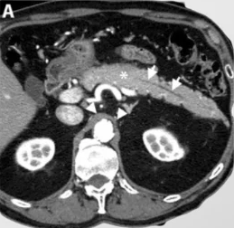
A · Lésion du corps · canal · fibroseTDM axiale · phase pancréatique Lésion mal limitée du corps du pancréas (astérisque), sans dilatation significative du canal pancréatique principal (flèches vertes). Manchon tissulaire péri-aortique (têtes de flèche violettes).
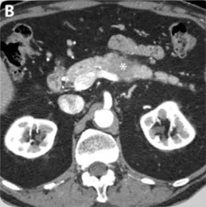
B · Seconde lésion du corpsTDM axiale · phase pancréatique Deuxième lésion mal limitée du corps du pancréas (astérisque).
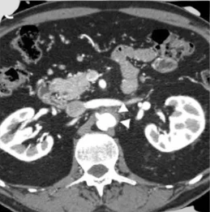
C · Fibrose rétropéritonéaleTDM axiale · phase pancréatique Manchon tissulaire péri-aortique (têtes de flèche violettes) : fibrose rétropéritonéale liée à une maladie à IgG4.
1 / 3
✱Astérisque orange · lésions mal limitées du corps.
Flèches vertes · canal pancréatique sans dilatation significative.
Têtes de flèche violettes · manchon péri-aortique (fibrose rétropéritonéale IgG4).